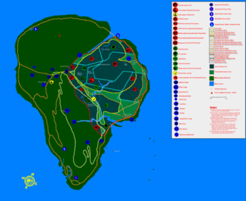

Isla Nublar
La Isla Nublar es una isla que se encuentra a 120 millas (190 km) de la costa de Costa Rica. Esta isla también fue la 'sala de exhibición' para el Parque Jurásico (es decir, la bioingenería importante no tuvo lugar allí, sino que es simplemente el lugar donde los dinosaurios se muestran a los visitantes).
Nombre
En español, Isla Nublar quiere decir "Isla de Nubes" Nublar no es un nombre en español, sino un verbo ('a las nubes'). En correcto español sería Isla de las Nubes, Isla Nublada, Isla Nubosa o Isla Nebulosa.
La isla
En la Isla Nublar está Jurassic Park, un parque zoológico cuya atracción son dinosaurios Genéticamente creados por John Hammond y la Corporación InGen luego de extraer el ADN de estas criaturas gracias de unos mosquitos que quedaron atrapados en un ámbar luego de haber succionado la sangre de los dinosaurios- hace millones de años de atrás. Hammond pretendía que la isla fuese visitada por millones de personas de todo el mundo, trayendo alegría a los niños, además de beneficios impresionantes. Sin embargo, mientras Hammond estaba mostrando la isla a la gente que tenía la intención de apoyarlo, los dinosaurios se soltaron y aterrorizaron el parque. Según la novela, la isla fue bombardeada por productos químicos de la ficticia Fuerza aérea de Costa Rica, mientras que en la película, su destino fue desconocido. Los animales de Nublar bien podrían haber sido igualmente exterminados, tanto en la historia como en la película. Esto se insinúa en una escena cortada de The Lost World: Jurassic Park, donde el nuevo líder de InGen, Peter Ludlow, el sobrino de Hammond, analiza el costo de tener que demoler Parque Jurásico. También han tenido lugar en la posible desaparición de los dinosaurios la contingencia de lisina. Los dinosaurios genéticamente alterados requieren una dosis de lisina de los cuidadores de Jurassic Park, como un plan de contingencia en el caso de que estos escapen.